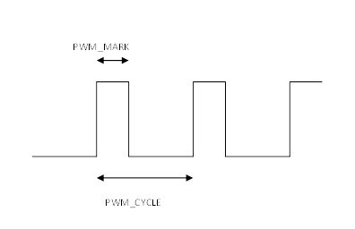

Axis Parameter
PWM_MARK = value
Defines the number of ON clocks in the mark, using the internal 20MHz clock (Maximum value 65535). See PWM_CONTROL for mode setting information.
A 20MHz clock is used as the base clock for the PWM generation.

|
value |
Number of internal counts defining the ON part of the PWM |
Set 25% ON at 20 kHz.
PWM_CYCLE = 1000
PWM_MARK = 250
Set 60% ON at 10 kHz.
PWM_CYCLE = 2000
PWM_MARK = 1200